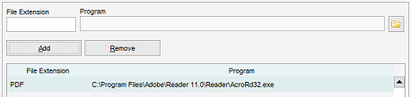
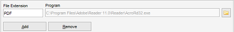
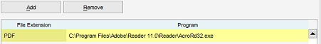

File Associations
Menu path: Settings > Settings > File Associations
The file associations are used to launch a file (via the right-click menu or using by using the file field in
item forms). By default Data Crow will try and find the program to handle
each file type. In case this fails (or you want to change the default behaviour) you can select the program to
handle specific types of files here.

Adding an Association
Type the file extension (without the dot; not ".MP3" but "MP3") and select the program to handle the
file type by clicking on the  icon. This
will open the file browser. Navigate to the executable of the program and select "Open".
icon. This
will open the file browser. Navigate to the executable of the program and select "Open".

Once you have entered the File Extension and the Program to handle it click Add to make it active.
Removing an Association
Click on the file association in the table and press "Remove".
